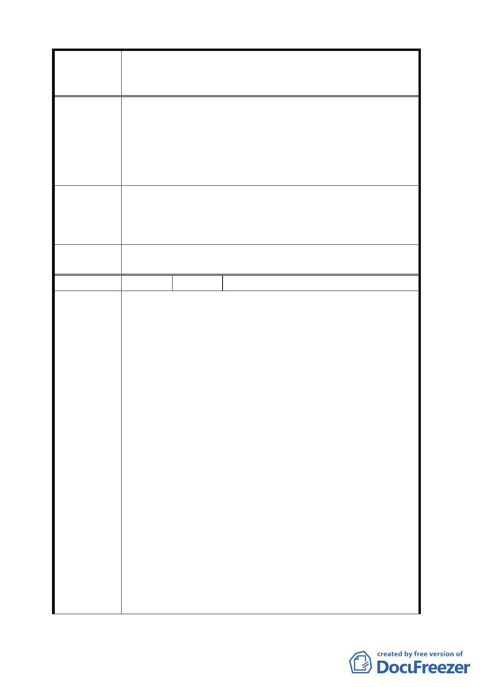

案名
建議辦法
委員會
決議
編號
陳情理由
變更臺北市華光社區暨週邊地區住宅區、電信用地、郵
政用地及變電所用地土地為商業區、數位科技專用區及
金融服務專用區主要計畫案
律，希望市府照顧弱勢，協助違建戶得以安置棲身。
2.華光社區違建戶在地居住 40、50 年，在社區周邊討生
活，若被迫遷離失所無以維生，請就地安置以為生計。
3.華光社區違建戶反對騰空標售，希望在政府補償及安
置方案定案後再行標售或以現況標售狀況下，使違建
戶面對實施者共商各項安置與補償方案。，
1.規劃住宅區以安置違建戶。將本案公園預定地規劃為
指定安置違建物之住宅區。
2.就地安置。
3.現況標售。
同編號 2 決議。
35 陳情人 王郁武
1.主管機關怠惰，造成住戶困擾。
（1）現住戶約 700 戶，區分為司法機關退休人員或眷
屬、檢察機關退休人員或眷屬、一般住戶（即違
建戶）。
（2）司法（檢察）機關人員在職時，當時均扣繳房租
津貼，如夫妻均為公教人員，雖屬不同機關，亦
均扣繳房租津貼，形成一種特殊關係。
（3）機關人員在系統內調整職務，原機關未通知收回
眷舍，新機關仍照扣繳房租津貼，未再配新眷戶，
住戶認為合法居住。
（4）以前各機關以房舍維護員修理眷舍，近年則不再
維修，現住戶對近百年之舊木造房舍，只得自費
修繕，形成既扣房租津貼，幼鬚自費修繕之雙重
負擔。
（5）華光社區行政院方案，對前述狀況一概不予承認，
另採：合規定住戶（即始終未調職者）給予 150、
180、220 萬之搬遷補助。不合規定住戶（即調整
職務者）不予補助，即採訴訟程序追回眷戶，法
院簽訂和解書限期搬遷。
由上可知現住戶之困擾，均係由主管機關怠惰職務，
規則於現住戶顯不合理。
2.對華光社區都市更新之看法。
- 21 -